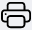

Журнал методик и образцов контроля с метрологическими характеристиками
Данный журнал служит для выбора образцов контроля и метрологических характеристик по которым будем контролировать методику.

Функции журнала
- Ведение учета методик и выбранных образцов контроля с метрологическими характеристиками
- Обеспечение доступа к интерфейсу регистрации методики и образца контроля с метрологической характеристикой
- Отображение записей в таблице по заданным параметрам (фильтрация)
- Отображение у каждой методики выбранных образцов контроля и метрологических характеристик для контроля
Структура журнала
Журнал договоров состоит из следующих элементов:
- Иконка вызова интерфейса регистрации методики и образца контроля с метрологической характеристикой
- Иконка перехода к списку образцов контроля.
- Область фильтров
- Таблица методик
- Выбранные образцы контроля и метрологические характеристики у текущей методики
- Выбор количества отображаемых строк в таблице
- Иконки сервисных функций
Кнопка вызова интерфейса регистрации образцов контроля с метрологическими характеристиками
 Нажмите на данную кнопку чтобы вызвать интерфейс регистрации образцов контроля с метрологическими характеристиками.
Нажмите на данную кнопку чтобы вызвать интерфейс регистрации образцов контроля с метрологическими характеристиками.
Интерфейс регистрации

Для того, чтобы внести в БД ЛИМС данные:
- Вызовите интерфейс регистрации
- В поле «Методика» выберите нужную методику
- В поле «Образец контроля с метрологической характеристикой» выберите нужный образец контроля с метрологической характеристикой
-
Нажмите кнопку

Результат: данные зарегистрированы, запись появилась в таблице журнала методик и образцов контроля с метрологическими характеристиками.
Кнопка просмотра выбранных образцов контроля с метрологическими характеристиками

Интерфейс выбранных образцов контроля с метрологическими характеристиками
⚠️ В случаи отсутвия у методики выбранных образцов контроля с метрологическими характеристиками будет надпись "Отсутствуют образцы контроля".
Нажмите на даную иконку
и в выпадающем списке выберите нужный образец контроля с метрологической характеристикой.
После выбора можно перейти в результаты измерения для вснесения данных нажав на иконку
 .
.

Структура
Состоит из следующих столбцов:
- Образец контроля - наименование образца контроля
- Номер - номер образца
- Метрологическая характеристика - компонент образца контроля
- Аттестованное значение - аттестованное значение компонента
- Измерения - иконка перехода к результатам измерений
- История - история добавления образца контроля и метрологической характеристики
- Открепить - кнопка открепления образца контроля и метрологической характеристики от текущей методики
Легенда
В начале каждой строки находится цветовой код, который обозначает стадию, на которой находится данный образец. Ниже представлена расшифровка цветовых кодов стадий заявки.
- Образец контроля не актуален
- Истек срок образца контроля
- До истечения срока образца контроля осталось менее 60 дней
- Все в порядке
- Неизвестный статус
Область фильтров
Данная область содержит в себе поля для задания параметров сортировки информации в таблице (см. соотв. номер ниже).
-
Поля выбора ОА
Установите курсор в данное поле и в выпадающем списке выберите необходимый параметр, условия в рамках которого вам необходимо отобразить.
-
Поле выбора лаборатории или помещения
Установите курсор в данное поле и в выпадающем списке выберите лабораторию или помещение, условия в рамках которого вам необходимо отобразить.
-
Кнопка сброса фильтров
Нажмите на данную кнопку, чтобы сбросить все примененные фильтры.
Таблица методик
Данная таблица содержит все методики, а также выбранные образцы контроля и метролигические характеристики.
Структура таблицы
Первая строка таблицы представляет собой поля поиска по столбцам (см. соотв. номер ниже).
- Введите в данные поля слово или значение, которое вы хотите найти в строках соответствующего столбца. В результате в таблице отобразятся все строки, содержащие искомую информацию.
- Нажмите на стрелки для сортировки по алфавиту или по возрастанию / убыванию (в зависимости от типа значений в столбце).
Таблица состоит из следующих столбцов:
- Определяемая характеристика / показатель - наименование методики
- Пункт документа - пункт методики
- Номер документа - номер документа методики
Выбор количества отображаемых строк в таблице

Наведите курсор на окно выбора количества отображаемых строк в таблице. В выпадающем списке выберите нужное количество (10, 25, 50, 100). После этого в таблице отобразится выбранное количество строк.
Иконки сервисных функций
 Данная иконка служит для скрытия столбцов в таблице.
При нажатии на нее появится меню выбора столбцов.
Нажмите на кнопку названия, чтобы скрыть соответствующий столбец.
Результат вы увидите сразу, страницу перезагружать не требуется.
Данная иконка служит для скрытия столбцов в таблице.
При нажатии на нее появится меню выбора столбцов.
Нажмите на кнопку названия, чтобы скрыть соответствующий столбец.
Результат вы увидите сразу, страницу перезагружать не требуется.
 При нажатии на данную иконку произойдет копирование содержимого таблицы,
представленной на экране, в буфер обмена.
Далее вы можете вставить данные таблицы в любой текстовый или табличный документ.
При нажатии на данную иконку произойдет копирование содержимого таблицы,
представленной на экране, в буфер обмена.
Далее вы можете вставить данные таблицы в любой текстовый или табличный документ.
 При нажатии на данную иконку произойдет скачивание таблицы,
представленной на экране, на ваш локальный компьютер в формате xlsx.
При нажатии на данную иконку произойдет скачивание таблицы,
представленной на экране, на ваш локальный компьютер в формате xlsx.
 Данная иконка служит для вывода на печать представленной на экране таблицы. При нажатии на нее откроется окно выбора параметров печати и предварительного просмотра.